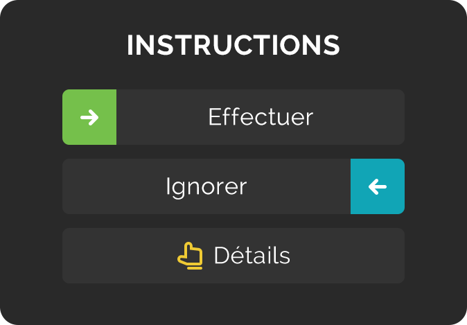

Q : Comment fonctionne Productive ? plus... moins...
R : La productivité t'aide à acquérir des habitudes. Planifie tes journées, suis ce que tu as fait et ce que tu n'as pas fait chaque jour et célébre les bons résultats.
Sur l'écran « Aujourd'hui », tu peux voir les habitudes prévues pour aujourd'hui et la partie actuelle de la journée.
Balaye vers la droite pour marquer tes habitudes comme « faites ». Marque toutes les habitudes de la journée comme « faites » pour en faire une journée « parfaite ». L'accumulation de journées « parfaites » te motivera et te rapprochera d'une vie meilleure.
Q : Comment fonctionnent les séries ? plus... moins...
R : Chaque fois que tu marques une habitude comme étant « faite » sans l'ignorer, ta série pour cette habitude s'élève. Ignorer une habitude ne brisera pas ta série, mais ne l'augmentera pas non plus. Si tu ignores une habitude (c.-à-d. que tu ne la marques pas comme étant « faite » ou « ignorée »), cela brisera ta série.
Si une habitude est prévue pour le matin et le soir, tu dois la pratiquer tous les deux pour obtenir une augmentation de ta série.
Marque toutes les habitudes de la journée comme étant « faites », obtiens une journée « parfaite » et regarde tes séries grandir dans les Statistiques.
Q : Quand faut-il ignorer une habitude ? plus... moins...
R : Tu ne devrais ignorer une habitude que pour une bonne raison, par exemple, tu ne peux pas tout abandonner pendant tes vacances. Le fait d'ignorer ne brise pas ta série, mais t'empêche d'obtenir une journée parfaite.
Si une habitude est prévue pour un jour particulier et que tu ne la marques pas comme « faite » ou « ignorée », elle est automatiquement marquée comme « ignorée ». Les habitudes oubliées brisent la routine et donnent lieu à un message « en retard » la prochaine fois que l'habitude est prévue.
Il n'est pas nécessaire d'ignorer les habitudes hebdomadaires ou mensuelles les jours où tu ne dois pas les pratiquer.
Q : Suivre les mauvaises habitudes plus... moins...
R : Les mauvaises habitudes peuvent être suivies tout comme les bonnes habitudes.
Disons que tu veux limiter la malbouffe à deux jours par semaine. Il suffit d'ajouter une habitude « pas de malbouffe » cinq fois par semaine, puis de la marquer comme « faite » les jours où tu ne manges pas de malbouffe.
Q : Comment puis-je modifier les jours passés ? plus... moins...
R : Tu peux afficher les jours passés en tapant sur la date en haut de l'écran « Aujourd'hui », utiliser le calendrier dans Statistiques ou détails sur les habitudes (en tapant sur une habitude).
Garde à l'esprit : tu ne peux modifier les habitudes qu'à partir du jour où elles ont été créées.
Q : Comment fonctionnent les rappels ? plus... moins...
R : Tu peux définir des rappels généraux dans Menu->Rappels pour obtenir un plan pour chaque partie de la journée et un résumé à la fin de la journée.
Tu peux également ajouter des rappels chronométrés pour les habitudes individuelles. Ces rappels ne seront envoyés que les jours où l'habitude apparaît sur ta liste, et si tu ne l'as pas déjà marquée comme « faite » ou « ignorée ».
PREMIUM
Productive Premium est un abonnement payant qui te donne accès à des habitudes illimitées.
Fin de la période d'essai et renouvellement de l'abonnement
À la fin de la période d'essai, Google Play exécute automatiquement la facturation avec la carte de crédit que l'utilisateur a fournie lors de l'achat initial, au montant fixé pour l'abonnement complet, et continue à l'intervalle d'abonnement. Si nécessaire, tu peux résilier l'abonnement à tout moment pendant la période d'essai. Dans ce cas, l'abonnement reste actif jusqu'à la fin de la période d'essai, mais Google Play ne le renouvelle pas automatiquement ; à la fin de la période d'essai, l'abonnement expire et Google Play ne te facture rien.
Annulation de l'abonnement
Les abonnements à Google Play se renouvellent automatiquement à moins que tu ne te désinscrives. La désinstallation d'une application n'interrompt pas automatiquement ton abonnement. Tu peux consulter l'état de tous tes abonnements et les annuler si nécessaire en allant dans Google Play Store et en touchant Menu > Abonnements. Tu peux également accéder à cette page directement par le lien http://play.google.com/store/account/subscriptions ou en utilisant un ordinateur pour visiter play.google.com et en cliquant sur « Mes abonnements » dans le menu à gauche.
Lorsque tu annules un abonnement, Google Play n'offre pas de remboursement pour le cycle de facturation en cours. Au lieu de cela, il permet à l'utilisateur d'avoir accès à l'abonnement annulé jusqu'à la fin du cycle de facturation en cours, moment auquel il met fin à l'abonnement.
Désinstaller l'application
Lorsque tu décides de désinstaller une application qui comprend des abonnements achetés, l'application Play Store t'informe des abonnements actifs. Si tu choisis de continuer la désinstallation, l'application sera supprimée mais les abonnements resteront actifs et la facturation récurrente continuera. Tu peux annuler les abonnements associés à tout moment dans l'écran « Mes applications et jeux » de l'application Play Store.
Notifications
Tu peux désactiver les notifications à tout moment dans Paramètres > Notification > Notifications > Notifications de l'application. Appuie sur l'application Productive, puis appuie sur le bouton basculant pour bloquer les notifications push.
Assistance
Si tu as des questions ou des commentaires, n'hésite pas à nous contacter à productive-android@bendingspoons.com.
Tout le contenu de cette application tel que texte, graphismes et images est la propriété de Apalon ou de ses fournisseurs de contenu et est protégé par les lois américaines et internationales. Les logos et les noms sont des marques déposées d'Apalon, de ses affiliés et de ses partenaires.
EULA | Politique de confidentialité | Choisir sa pub
Personalize Your Ad Experience © 2019 IAC Search & Media Technologies Limited. Tous droits réservés. La société de logiciel contient le code open source listé ici.